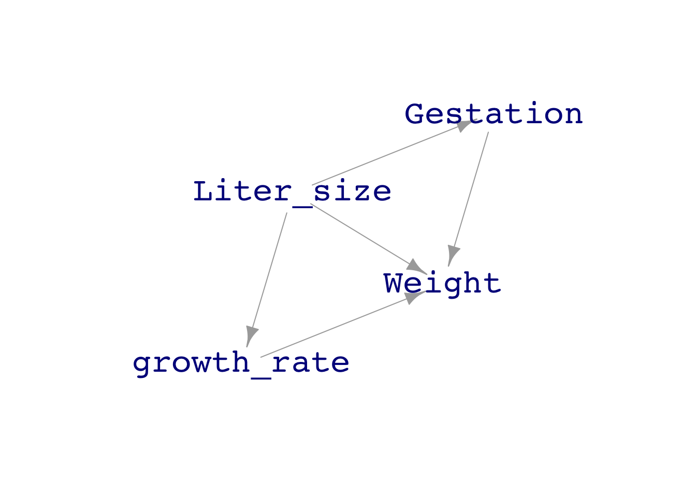
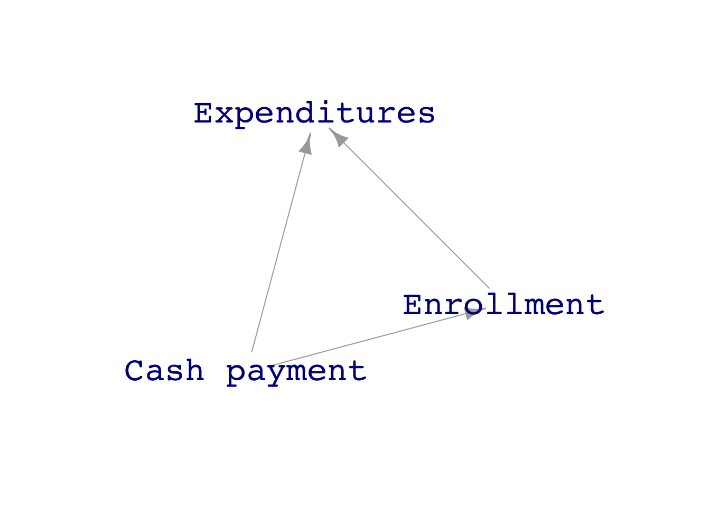
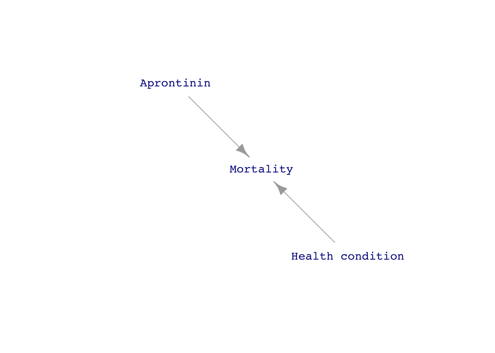
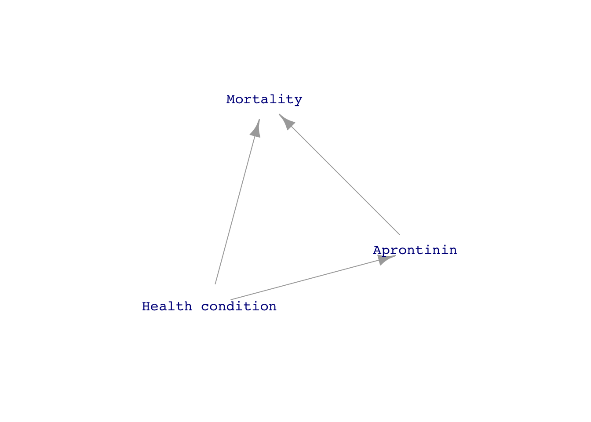

Confounding
Suppose you are concerned that the chemicals used by lawn-greening companies are a source of cancer or other illness. You propose to find out by collecting and modeling data; sampling many households that have used lawn-greening chemicals for at least a decade and other households that have never used lawn-greening chemicals. You’ll record both chemical use and a measure of health outcome: whether anyone in that household has developed cancer in the last five years.
Here are a few rows from the data (which we have simulated for this example):
| grass | cancer |
|---|---|
| organic | no |
| chemicals | no |
| chemicals | no |
| chemicals | no |
| organic | no |
| organic | no |
| organic | no |
| organic | no |
| chemicals | yes |
| organic | no |
Analyzing such simple data is straightforward, since we are interested in the possible role of grass-greening chemicals in increasing risk of cancer. First, check the overall cancer rate:
# overall cancer rate
lm(zero_one(cancer, one="yes") ~ 1, data = Cancer_data) %>% coefficients()(Intercept)
0.026 In these data, 2.6% of the sampled households had a cancer in the last five years. But how does the grass treatment affect that rate?
mod <- lm(zero_one(cancer, one="yes") ~ grass, data = Cancer_data)
coefficients(mod) (Intercept) grassorganic
0.01246883 0.02258960 For households whose lawn treatment is “organic,” the risk of cancer is higher by 2.3 percentage points compared to households that treat their grass with chemicals. This is certainly not what we were expecting, but it is what the data show. On the other hand, there is sampling variability to take into account. Let’s look at the confidence intervals:
confint(mod) 2.5 % 97.5 %
(Intercept) -0.003103381 0.02804104
grassorganic 0.002469193 0.04271001The confidence interval on grassorganic does not include zero, but it comes pretty close. We are not sure what to conclude: Might the chemical treatment of grass be protective against cancer? This seems implausible. Might we have causality backwards? Hard to imagine that the appropriate DAG is \(\text{cancer} \rightarrow \text{chemical treatment}\); causation must be the other way around:
\[\text{cancer} \leftarrow \text{chemical treatment}\ .\]
The statistical thinker knows to consider the possible role of other factors. To form reasonable hypotheses, you need some knowledge of how the system under study works. For instance, green grass is not a necessity, so the households who treat their lawn with chemicals tend to have money to spare. It’s also the case that health outcomes are somewhat better for wealthier people. In part this is because of better access to health care. Another factor is that wealthier people can live in less polluted neighborhoods and are less likely to work in dangerous conditions, such as exposure to toxic chemicals. This suggests a DAG hypothesis where “wealth” influences how the household’s grass is treated and wealth similarly influences the risk of developing cancer. Like this:

A description of this structure of causality is, “The effect of grass treatment on cancer is confounded by wealth.” Oxford Languages offers two definitions of “confound.”
- Cause surprise or confusion in someone, especially by acting against their expectations.
- Mix up something with something else so that the individual elements become difficult to distinguish.
It is this second definition that describes the statistical meaning of “confound.”
To be sure, the first definition seems relevant to our story, since the protagonist expected that chemical use would be associated with higher cancer rates and was surprised to find otherwise. But the statistical thinker doesn’t throw up her hands when faced with the mixing up of causal factors. Instead, she uses modeling techniques to untangle the influences of the various factors.
Using covariates in models is one such technique. For instance, in generating the simulated data shown above, we used a DAG which associated greater wealth with chemical treatment of grass and also, separately, with better health outcomes. Wealth is one of the variables included in the data, even if we didn’t show it earlier in the example:
| wealth | grass | cancer |
|---|---|---|
| 1.4283990 | organic | no |
| 0.0628559 | chemicals | no |
| 0.4382804 | chemicals | no |
| 0.6084487 | chemicals | no |
| 0.8033695 | organic | no |
| -0.9367287 | organic | no |
| 0.6664468 | organic | no |
| -1.2445977 | organic | no |
| -1.3194594 | chemicals | yes |
| -1.6162391 | organic | no |
Including wealth as a covariate in this case untangles the system so that we can see the direct link between chemicals and health.
lm(zero_one(cancer, one="yes") ~ grass + wealth, data = Cancer_data) %>%
confint() 2.5 % 97.5 %
(Intercept) 0.02468113 0.0574819325
grassorganic -0.04508107 -0.0009698601
wealth -0.05680934 -0.0356454288Same data, but the opposite conclusion. With wealth as a covariate, “organic” lawn treatment (that is, leaving things be!) reduces the risk of cancer. But the bigger factor in shaping cancer risk is represented by wealth.
Keep in mind that this is simulated data. So don’t draw any conclusions from the data in this example about the safety of the chemicals used by lawn-greening companies.
Sewall Wright (1889-1988) was an American geneticist and statistical pioneer. One of his statistical inventions is the “coefficient of determination” now universally called R2 and a widely used, basic summary of statistical models. In 1921, he invented “path analysis.” One of his “path diagrams” is shown in ?@fig-path-guinea-pig.
[1] "GET THIS FROM p.75 of the *Book of Why*"His path diagrams are directed acyclic graphs, DAGs, augmented with coefficients representing the relative strength of each contributor to a node. He worked out the algebra of the correlation induced by the graph between any two nodes. Then, by measuring the R2 between pairs of nodes, he was able in some cases to work backwards to numerical values for the coefficients.
Wright’s path diagrams are the historically earliest form of our DAGs. In his honor, we’ve constructed a DAG to represent one of his calculations, how much the body weight at birth of a guinea pig increases due to one day longer in the womb. The path diagram Wright imagined is drawn below, though we have left out the coefficients from the display.

We can’t measure the growth rate directly, but we can measure liter size, gestation length, and birth weight. How can we estimate the direct effect of growth rate when it is confounded with the other causal pathways.
Sewall’s breeding experiments would have provided data like this:
| liter_size | growth_rate | weight |
|---|---|---|
| 5 | 4 | 86 |
| 5 | 5 | 109 |
| 5 | 6 | 110 |
| 5 | 5 | 96 |
| 6 | 4 | 80 |
| 5 | 5 | 99 |
You might think that weight gain per day of gestation can be simply calculated as weight/gestation, but this ignores the fact that weight gain is slow early in gestation and faster as the cubs develop. Instead, using a model weight ~ gestation lets us look at the marginal impact of an extra day of gestation. The coefficients from this model indicates that weight increases by 6.8 grams per extra day of gestation.
lm(weight ~ gestation, data = Pigs) %>% coefficients()(Intercept) gestation
-32.444194 6.840467 But Wright knew that this number was misleading. Larger liters tend to have shorter gestation times. And larger liters produce cubs that weigh less. With more computational power available to us, we can use a simpler calculation to incorporate these facts into the estimation of weight gain per day of gestation:
lm(weight ~ gestation + liter_size, data = Pigs) %>% coefficients()(Intercept) gestation liter_size
104.19844 4.50268 -17.92767 This model pegs the growth rate at about 4.5 grams per day.
Since we generated the data from a DAG, we have the luxury of measuring the actual growth rate used for each liter.
Pigs %>% summarize(rate = mean(growth_rate))# A tibble: 1 × 1
rate
<dbl>
1 4.84Covariates help us deal with confounding!
\(X \overset{a}{\longrightarrow} Y \overset{b}{\longleftarrow} C\)
\(\text{resid}^2_y = \sigma_{yy} - \left(a^2 \sigma_{xx} + b^2 \sigma_{cc}\right)\)
\(\sigma_{xy} = \sqrt{\sigma_{xx}\left[\sigma_{yy} - \left(b^2 \sigma_{cc} + \text{resid}^2_y\right)\right]}\)
wright_example <- dag_make(
x ~ exo(4),
c ~ exo(1),
y ~ 2*x + 3*c + exo(1)
)
Sample <- sample(wright_example, size=1000)
Stats <- Sample %>%
summarize(xv = var(x), yv=var(y), cv=var(c), xy = cov(x,y), cy = cov(y,c), xc = cov(x,c))
Normalize <- Sample %>% mutate(x = x/sqrt(Stats$xv),
y = y/sqrt(Stats$yv),
c = c/sqrt(Stats$cv))
Stats# A tibble: 1 × 6
xv yv cv xy cy xc
<dbl> <dbl> <dbl> <dbl> <dbl> <dbl>
1 16.6 76.8 1.00 33.3 3.17 0.100with(Stats, yv - (4*xv + 9*cv)) # variance of y[1] 1.462633with(Stats, sqrt(xv*(yv - (9*cv +1)))) # covariance of x with y[1] 33.26253with(Stats, sqrt(cv*(yv - (4*xv + 1)))) # covariance of c with y[1] 3.077456dag_pigs <- dag_make(
liter_size ~ 5 + as.numeric(exo() > 1),
.gestation ~ 24 - liter_size + exo(),
.growth_rate ~ 10 - liter_size + exo(.3),
weight ~ .growth_rate*.gestation + liter_size + exo(),
gestation ~ round(.gestation)
)
dag_pigs_for_drawing <- dag_make(
Liter_size ~ 5 + as.numeric(exo() > 1),
Gestation ~ 24 - Liter_size + exo(),
growth_rate ~ 10 - Liter_size + exo(.3),
Weight ~ growth_rate*Gestation + Liter_size + exo()
)
set.seed(103); dag_draw(dag_pigs_for_drawing)
set.seed(103); Dat <- sample(dag_pigs, size=1000)
lm(weight ~ liter_size + gestation, data = Dat) %>% confint() 2.5 % 97.5 %
(Intercept) 91.885081 111.143461
liter_size -18.810932 -16.710462
gestation 4.267084 4.939893lm(weight ~ gestation, data = Dat) %>% confint() 2.5 % 97.5 %
(Intercept) -34.762796 -17.414430
gestation 6.060804 6.979343DAGs and covariates
The argument, “reduce spending by reducing spending” is very compelling, common sense even. It’s harder to see how reducing spending in one area—the cash payment to people not on the insurance plan—can increase spending overall. I might have been more successful convincing the college budget committee not to eliminate the cash payment if they had understood the language of DAGs. Figure 1 shows two competing DAGs for the situation:


The people on the budget committee saw clearly the direct link between the cash payment and total expenditures and likely would not have disputed a direct link between enrollment and expenditures. But they didn’t imagine a link between the cash payment and enrollment. I did, because I knew of several colleagues who used their spouse’s companies insurance plan, even though it was identical to the college’s plan.
The situation with the drug aprotinin is similar.


LOOK AT SOME DAGs to show what happens when you include a covariate: which links you study.